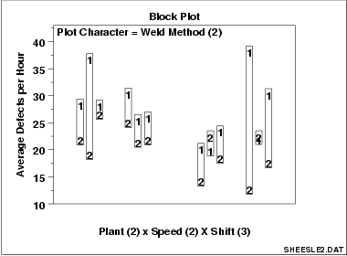

|
1.
Exploratory Data Analysis
1.3. EDA Techniques 1.3.3. Graphical Techniques: Alphabetic
|
|||
|
Purpose: Check to determine if a factor of interest has an effect robust over all other factors |
The block plot (Filliben
1993) is an EDA tool for assessing whether the factor of interest
(the primary factor) has a statistically significant effect on the
response, and whether that conclusion about the primary factor effect
is valid robustly over all other nuisance or secondary factors in
the experiment.
It replaces the analysis of variance test with a less assumption-dependent binomial test and should be routinely used whenever we are trying to robustly decide whether a primary factor has an effect. |
||
|
Sample Plot: Weld method 2 is lower (better) than weld method 1 in 10 of 12 cases |

This block plot reveals that in 10 of the 12 cases (bars), weld method 2 is lower (better) than weld method 1. From a binomial point of view, weld method is statistically significant. |
||
| Definition |
Block Plots are formed as follows:
|
||
|
Discussion: Primary factor is denoted by plot character: within-bar plot character. |
Average number of defective lead wires per hour from a study with
four factors,
|
||
| Ordering along the horizontal axis |
In the above chart, the ordering along the horizontal axis is as
follows:
|
||
| Setting 2 is better than setting 1 in 10 out of 12 cases |
In the block plot for the first bar (plant 1, speed 1, shift 1),
weld method 1 yields about 28 defects per hour while weld method 2
yields about 22 defects per hour--hence the difference for this
combination is about 6 defects per hour and weld method 2
is seen to be better (smaller number of defects per hour).
Is "weld method 2 is better than weld method 1" a general conclusion? For the second bar (plant 1, speed 1, shift 2), weld method 1 is about 37 while weld method 2 is only about 18. Thus weld method 2 is again seen to be better than weld method 1. Similarly for bar 3 (plant 1, speed 1, shift 3), we see weld method 2 is smaller than weld method 1. Scanning over all of the 12 bars, we see that weld method 2 is smaller than weld method 1 in 10 of the 12 cases, which is highly suggestive of a robust weld method effect. |
||
| An event with chance probability of only 2% | What is the chance of 10 out of 12 happening by chance? This is probabilistically equivalent to testing whether a coin is fair by flipping it and getting 10 heads in 12 tosses. The chance (from the binomial distribution) of getting 10 (or more extreme: 11, 12) heads in 12 flips of a fair coin is about 2%. Such low-probability events are usually rejected as untenable and in practice we would conclude that there is a difference in weld methods. | ||
|
Advantage: Graphical and binomial |
The advantages of the block plot are as follows:
|
||
| Questions |
The block plot can provide answers to the following questions:
|
||
|
Importance: Robustly checks the significance of the factor of interest |
The block plot is a graphical technique that pointedly focuses on whether or not the primary factor conclusions are in fact robustly general. This question is fundamentally different from the generic multi-factor experiment question where the analyst asks, "What factors are important and what factors are not" (a screening problem)? Global data analysis techniques, such as analysis of variance, can potentially be improved by local, focused data analysis techniques that take advantage of this difference. | ||
| Related Techniques |
t test (for shift in location for exactly 2
levels) ANOVA (for shift in location for 2 or more levels) Bihistogram (for shift in location, variation, and distribution for exactly 2 levels). |
||
| Case Study | The block plot is demonstrated in the ceramic strength data case study. | ||
| Software | Block plots are not currently available in most general purpose statistical software programs. However they can be generated using Dataplot and, with some programming, R software. | ||